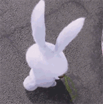

static 定位
该元素使用了 position: static
fixed 定位
Some more text
注意: IE7 和 IE8 支持只有一个 !DOCTYPE 指定固定值.
Some text
Some text
Some text
Some text
Some text
Some text
Some text
relative
这是位于正常位置的标题
这个标题相对于其正常位置向左移动
这个标题相对于其正常位置向右移动
相对定位会按照元素的原始位置对该元素进行移动。
样式 "left:-20px" 从元素的原始左侧位置减去 20 像素。
样式 "left:20px" 向元素的原始左侧位置增加 20 像素。
absolute
这是一个绝对定位了的标题
用绝对定位,一个元素可以放在页面上的任何位置。标题下面放置距离左边的页面500px和距离页面的顶部150
px的元素。.
尝试滚动页面。
注意: IE/Edge 15 及更早 IE 版本不支持 sticky 属性。
我是粘性定位!
滚动我
来回滚动我
滚动我
来回滚动我
滚动我
来回滚动我
This is a heading

因为图像元素设置了 z-index 属性值为 -1, 所以它会显示在文字之后。

overflow 属性
如果元素中的内容超出了给定的宽度和高度属性，overflow
属性可以确定是否显示滚动条等行为。
overflow: scroll:
菜鸟教程 -- 学的不仅是技术，更是梦想！！！菜鸟教程 --
学的不仅是技术，更是梦想！！！菜鸟教程 --
学的不仅是技术，更是梦想！！！菜鸟教程 -- 学的不仅是技术，更是梦想！！！
overflow: hidden:
菜鸟教程 -- 学的不仅是技术，更是梦想！！！菜鸟教程 --
学的不仅是技术，更是梦想！！！菜鸟教程 --
学的不仅是技术，更是梦想！！！菜鸟教程 -- 学的不仅是技术，更是梦想！！！
overflow: auto:
菜鸟教程 -- 学的不仅是技术，更是梦想！！！菜鸟教程 --
学的不仅是技术，更是梦想！！！菜鸟教程 --
学的不仅是技术，更是梦想！！！菜鸟教程 -- 学的不仅是技术，更是梦想！！！
overflow: visible (默认):
菜鸟教程 -- 学的不仅是技术，更是梦想！！！菜鸟教程 --
学的不仅是技术，更是梦想！！！菜鸟教程 --
学的不仅是技术，更是梦想！！！菜鸟教程 -- 学的不仅是技术，更是梦想！！！
overflow 属性规定当内容溢出元素框时发生的事情。
当你想更好的控制布局时你可以使用 overflow 属性。尝试修改 overflow 属性为:
visible, hidden, scroll, 或 inherit 并查看效果。 默认值为 visible。
请把鼠标移动到单词上，可以看到鼠标指针发生变化：
auto
crosshair
default
e-resize
help
move
n-resize
ne-resize
nw-resize
pointer
progress
s-resize
se-resize
sw-resize
text
w-resize
wait